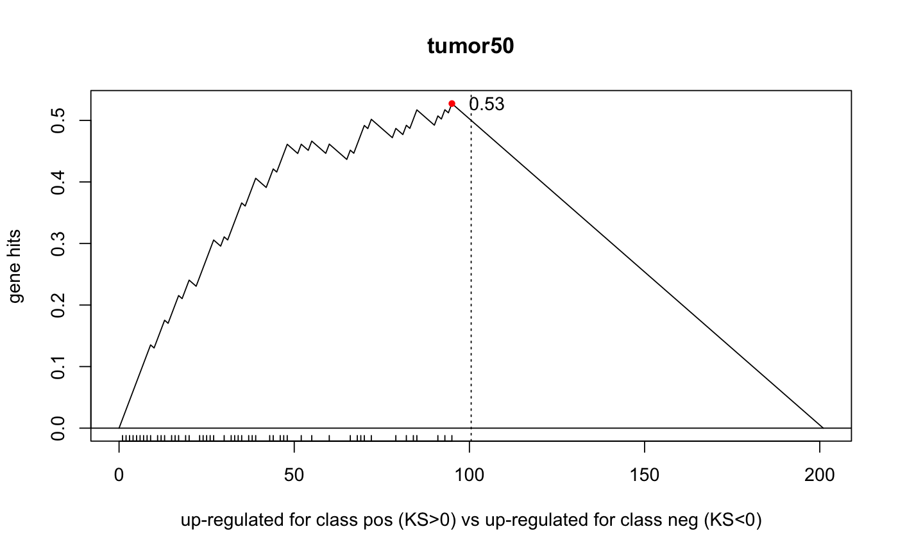

cbmGSEA
cbmGSEA re-implementation of Broad's GSEA, with
gene-specific permutation-based p-value calculation and FDR
correction by the BH method
cbmGSEA(eSet = NULL, rnkScore = NULL, pheno = NULL, tag = NULL, cond = NULL, control = NULL, geneId = NULL, gSet, minGset = 5, nperm = 100, score = c("tScore", "delta"), do.abs = FALSE, robust = FALSE, method = c("pearson", "spearman", "euclidean"), alternative = c("two.sided", "greater", "less"), weighted = FALSE, weight.p = 1, smoother = 1, clsLev = c("neg", "pos"), confound = NULL, seed = NULL, do.pval = !weighted, exhaustive = FALSE, do.plot = !is.null(plot.name), plot.name = NULL, plot.dev = pdf, topG = 20, verbose = FALSE, ...)
Arguments
- eSet
an [m-genes x n-samples] matrix
- rnkScore
provide a ranking score instead
- pheno
class ID
- tag
id of gene to use as template (nearest neighbor mode)
- cond
treatment label (e.g., TCDD)
- control
control label (e.g., DMSO)
- geneId
fData column containing the gene symbols
- gSet
a named list of genesets (i.e. vectors of gene IDs)
- minGset
minimum length of accepted genesets
- nperm
number of permutation iterations
- score
one of "tScore","delta": differential score used when cls is specified
- do.abs
rank genes by absolute value of score
- robust
compute robust score
- method
one of "pearson","spearman","euclidean": score used when tag is specified
- alternative
one of "two.sided","greater","less"
- weighted
use weighted KS score as in GSEA
- weight.p
weight's exponent
- smoother
smooth p-values
- clsLev
phenotype labels (e.g., c('normal','tumor'))
- confound
confounder variable (must be categorical)
- seed
random seed (for reproducible results)
- do.pval
compute asymptotic p-values
- exhaustive
generate all possible permutations
- do.plot
generate ks plots
- plot.name
file stub where to save ks plots
- plot.dev
display device
- topG
number of genesets to display per direction
- verbose
verbosity TRUE/FALSE
Value
a data.frame with one geneset per row and columns reporting KS score, p-value, q-value, etc.
Examples
data(cbmGSEAdata) if ( is.null(cbmGSEA.eSet) || is.null(cbmGSEA.gSet) ) stop( "missing objects" ) table(pData(cbmGSEA.eSet)$tissue_type) # expecting 8 AN's + 8 Tumor's#> #> AN Tumor #> 8 8# 1) phenotype shuffling set.seed(123) OUT1 <- cbmGSEA(eSet=cbmGSEA.eSet,gSet=cbmGSEA.gSet,pheno="tissue_type",cond="Tumor",control="AN", nperm=100,verbose=TRUE,do.plot=TRUE,topG=1)#> computing observed scores .. (based on class template) .. done. #> computing observed enrichment score(s) ..#> done. #> permutation testing (by phenotype shuffling): #> computing permuted ks scores .. 10% 20% 30% 40% 50% 60% 70% 80% 90% 100%print(OUT1[,1:5])#> score p1 p2 fdr maxT #> tumor50 0.7512438 1.00000000 0.01980198 0.04950495 0.00 #> normal50 -0.7512438 0.00990099 0.01980198 0.04950495 0.00 #> HALLMARK_NOTCH_SIGNALING -0.1204913 0.24752475 0.49504950 0.71287129 0.86 #> HALLMARK_HEDGEHOG_SIGNALING -0.1368159 0.31683168 0.63366337 0.71287129 0.86 #> HALLMARK_ANGIOGENESIS -0.1156716 0.35643564 0.71287129 0.71287129 0.86# 2) rank shuffling (based on pre-computed ranked list) # carry out a simple t-score calculation (notice the '-', to achieve a decreasing=TRUE sort) rnkS <- -tScore(x=exprs(cbmGSEA.eSet),cls=factor(pData(cbmGSEA.eSet)$tissue_type)) set.seed(123) OUT2 <- cbmGSEA(rnkScore=rnkS,gSet=cbmGSEA.gSet,nperm=100,verbose=TRUE,do.plot=TRUE,topG=1)#> computing observed enrichment score(s) ..#> done. #> permutation testing (by rank shuffling): #> computing permuted ks scores .. 10% 20% 30% 40% 50% 60% 70% 80% 90% 100%print(OUT2[,1:5])#> score p1 p2 fdr maxT #> tumor50 0.7512438 1.00000000 0.01980198 0.04950495 0.00 #> normal50 -0.7512438 0.00990099 0.01980198 0.04950495 0.00 #> HALLMARK_NOTCH_SIGNALING -0.1204913 0.19801980 0.39603960 0.49504950 0.86 #> HALLMARK_HEDGEHOG_SIGNALING -0.1368159 0.15841584 0.31683168 0.49504950 0.80 #> HALLMARK_ANGIOGENESIS -0.1156716 0.26732673 0.53465347 0.53465347 0.86# ascertain that the results are the same with the two methods all.equal(OUT1[,"score"],OUT2[,"score"]) # same results expected#> [1] TRUE# 3) gene tag shuffling (ranking by nearest neighbor with respect to "MAML2") set.seed(123) OUT3 <- cbmGSEA(eSet=cbmGSEA.eSet,tag="MAML2",gSet=cbmGSEA.gSet,nperm=100,verbose=TRUE,do.plot=TRUE,topG=1)#> computing observed scores .. (based on NN) .. done. #> computing observed enrichment score(s) ..#> done. #> permutation testing (by tag shuffling): #> computing permuted ks scores .. 10% 20% 30% 40% 50% 60% 70% 80% 90% 100%print(OUT3[,1:5])#> score p1 p2 fdr maxT #> tumor50 0.5273632 0.99009901 0.03960396 0.0990099 0.04 #> normal50 -0.4671540 0.02970297 0.05940594 0.0990099 0.08 #> HALLMARK_NOTCH_SIGNALING -0.1486118 0.14851485 0.29702970 0.3712871 0.67 #> HALLMARK_HEDGEHOG_SIGNALING -0.2276119 0.00990099 0.01980198 0.0990099 0.24 #> HALLMARK_ANGIOGENESIS 0.1318408 0.66336634 0.69306931 0.6930693 0.73